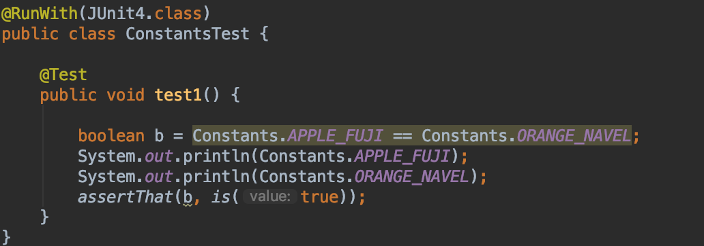
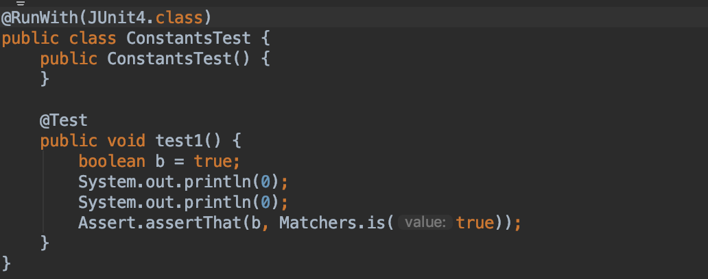
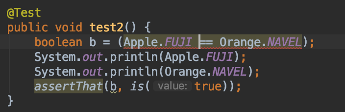
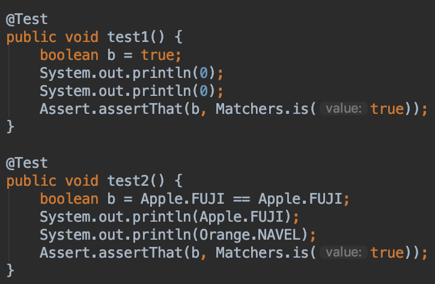

서론
자바에서는 상수(Costants)라는 개념이 있다.
변하지 않는 값을 공통적으로 선언하고 한 군데에서 관리하고자 사용한다.
Java 1.5 버전부터 enum (enumeration) 타입을 제공하였고, C/C++에서 처럼 단순한 정수값을 제공하는 수준을 넘어
완전한 형태의 클래스의 역할을 수행 하는 강력한 기능을 제공한다.
정수 열거 패턴(int enum pattern)의 단점
타입 safe하지 않다.
1 | public static final int APPLE_FUJI = 0; |
정수 열거 패턴은 위와 같이 선언하고 사용된다.
자바는 정수 열거 패턴을 위한 별도의 namespace를 지원하지 않기 때문에 어쩔수 없이 접두어를 사용해서 이름 충돌을 방지한다.
1 | APPLE_FUJI == ORANGE_NAVEL; |
위에 대한 결과는 true가 되기 때문에 type safe 하지 않으며, 표현력도 좋지 않다.
정수 열거 패턴을 사용한 프로그램은 깨지기 쉽다.
평범한 상수를 나열한 것뿐이라, 컴파일 하면 그 값이 클라이언트 파일에 그대로 새겨진다.
따라서 상수의 값이 바뀌면 클라리언트도 반드시 다시 컴파일 해야 한다.다시 컴파일 하지 않은 클라이언트는 실행이 되더라도 엉뚱하게 동작할 수 있다.


compile 이후에는 상수에 대한 namespace정보가 없기 때문에 단순히 상수 값만 찍히게 된다.
정수 상수는 문자열로 출력하기 까다롭다.
그 값을 출력하거나 디버거로 살펴보면 (의미가 아닌) 단지 숫자로만 보여서 썩 도움이 되지 않는다.
(APPLE_FUJI나, ORANGE_NAVEL 같은 의미를 출력하기 어렵다는 의미)
같은 정수 열거 그룹에 속한 모든 상수를 한 바퀴 순회하는 방법도 마땅치 않다.
(enum은 values()메서드를 통해 상수를 배열 형태로 제공한다.)
문자열 열거 패턴은 더 나쁘다.
상수의 의미를 출력할 수 있다는 점은 좋지만, 문자열 상수의 이름 대신 문자열 값을 그대로 하드코딩하게 만들기 때문이다.
하드코딩한 문자열에 오타가 있어도 컴파일러는 확인할 길이 없으니, 자연스럽게 런타임 버그가 생긴다.
문자열 비교에 따른 성능 저하 역시 당연한 결과다.
Java의 열거 타입
자바의 열거(enum) 타입은 완전한 형태의 클래스(class) 이다.
Java에서는 Enum.java라는 abstract클래스를 Java 1.5 부터 제공하고 있다.
1 | /** |
C/C++와 같이 다른 언어에서처럼 단순히 정수값만 지원하는 것이 아니라, 하나의 클래스로써의 역할을 수행해 강력한 기능을 제공한다.
열거(enum) 타입의 특징
- 열거 타입 자체는 클래스(class)이다.
- 상수 하나당 자신의 인스턴스를 하나씩 만들어(Singleton) public static final 필드로 공개한다.
- 열거 타입은 밖에서 접근할 수 있는 생성자를 제공하지 않으므로, 사실상 final이다.
(따라서 열거 타입 내 필드도 final이다.)
타입 safe하다.
열거 타입은 타입 안전성을 제공한다.
위의 APPLE과 ORANGE의 상수 형태를 enum으로 변경한 뒤 다시 테스트 해보자
1 | public enum Apple {FUJI, PIPPIN, GRANNY_SMITH} |

1 | Error:(24, 33) java: incomparable types: com.study.effectivejavatest.item34.Apple and com.study.effectivejavatest.item34.Orange |
컴파일 시, 위와 같은 에러가 발생한다.
Apple.FUJI와 Orange.NAVEL은 비교를 할 수 없는 타입이라는 내용이다.
다른 열거 타입의 값끼리 == 연산자로 비교하려는 꼴이기 때문이다.
각자의 namespace가 있다.
열거타입은 각자의 namespace가 있어서 이름이 같은 상수도 평화롭게 공존한다.
열거 타입에 새로운 상수를 추가하거나, 순서를 바꿔도 다시 컴파일 하지 않아도 된다.
공개 되는 것이 오직 필드의 이름 뿐이라, 컴파일 시, 클라이언트의 코드에 정수 값이 각인되지 않기 때문이다.

데이터와 메서드를 갖는 열거 타입
열거 타입은 메서드와 필드를 추가 할 수 있다.
각 상수 별로 데이터를 가질 수 있고, enum에서 공통적으로 사용하는 메서드를 선언하거나 상수 별로 메서드를 재정의 할 수 있다.
단순하게는 상수 모음이지만, 실제로는 클래스이기 때문에 고차원의 추상 개념 하나를 완벽히 표현해낼 수 있다.
1 |
|
위의 Planet의 예시를 보면, 행성별 상수는 각각 질량과 반지름을 필드로 가지고 있다.
그리고 표면중력에 대한 값을 계산해 주는 surfaceWeight라는 메서드를 공통으로 사용하고 있다.
- 열거 타입 상수 각각을 특정 데이터와 연결지으려면 생성자에서 데이터를 받아 인스턴스 필드에 저장하면 된다.
- 열거 타입은 외부로의 생성자를 제공하지 않기 때문에 불변 객체이다.
- 모든 필드는 final이다.
- 필드를 public으로 선언해도 되지만, private로 선언 후 접근자 메서드를 제공하는 것이 좋다.
상수별 메서드 구현
1 | public enum Operation { |
위와 같은 사칙 연산 열거타입이 있을 때, 사칙연산에 대한 로직을 열거 타입 내에 작성하고 싶을 때가 있다.
여러가지 방법을 통해 구현해 보도록 하겠다.
switch-case을 이용한 구현
1 | public double apply(double x, double y) { |
이런 경우에는 메서드 하나에 연산을 모아 볼 수 있는 장점은 있다.
하지만 상수가 추가 되는 경우, 실수로 case를 추가 하지 않으면, 알 수 없는 연산이라는 예외가 발생하게 된다.
abstract method를 이용한 구현
1 | public enum Operation { |
위와 같이 선언하면 상수가 추가 될 때마다 apply 메서드를 재정의 해줘야 한다.
Funtional Interface를 이용한 구현
1 | public enum Operation { |
Java 8에서 제공하는 BiFuntion 을 이용해 람다식을 이용하여 로직을 구현 할 수 있다.
편한 계산식 출력
1 | public static void main(String[] args) { |
1 | 2.000000 + 4.000000 = 6.000000 |
전략적 열거 타입 패턴
상수별 메서드 구현에는 열거 타입 상수끼리 코드를 공유하기 어렵다는 단점이 있다.
아래 예시는 요일별로 일당을 계산해 주는 열거타입 메서드이다.
1 | enum PayrollDay { |
간결하지만, 관리 관점에서는 위험한 코드이다.
공휴일과 같은 새로운 값을 열거타입에 추가하려면 그 값을 처리하는 case문을 잊지말고 추가해 줘야 한다.
상수별 메서드 구현으로 급여를 정확히 계산하는 방법은 두 가지다.
- 잔업수당을 계산하는 코드를 모든 상수에 중복해서 넣는다.
- 평일용/주말용으로 나눠 각각 도우미 메서드를 생성한다음 각 상수가 자신에게 필요한 메서드를 적절히 호출한다.
1번으로 로직을 구성할 경우 case 구문을 사용할 때와 동일한 문제가 발생한다.
가장 깔끔한 방법은 새로운 상수를 추가할 때, 잔업 수당에 대한 전략을 선택하게 하는 방법이다.
잔업 수당 전략 선택하기
1 | enum PayrollDay { |
위와 같이 코드를 변경하니 깔끔하게 되었다.
switch문은 열거 타입의 상수별 동작을 구현하는데 적합하지 않다.
하지만 기존의 열거 타입의 상수별 동작을 혼합해 넣을 때에는 switch문이 좋은 선택이 될 수 있다.
(최소한으로 코드를 변경하기 때문)
요약
필요한 원소를 컴파일타입에 알 수 있는 상수 집합이라면 항상 열거 타입을 사용하자
int 상수 대신 열거 타입으로 정의하라
각 상수와 특정 데이터를 연결 짓거나, 상수마다 다른 action이 필요한 경우 열거 타입이 효과적이다.
switch문으로 분기하여 로직을 구성하기 보다는 전략 열거타입 패턴을 사용하여 로직을 구현하라.
참고
- Effective Java 3rd Edition - Item 34. int 상수 대신 열거 타입을 사용하라